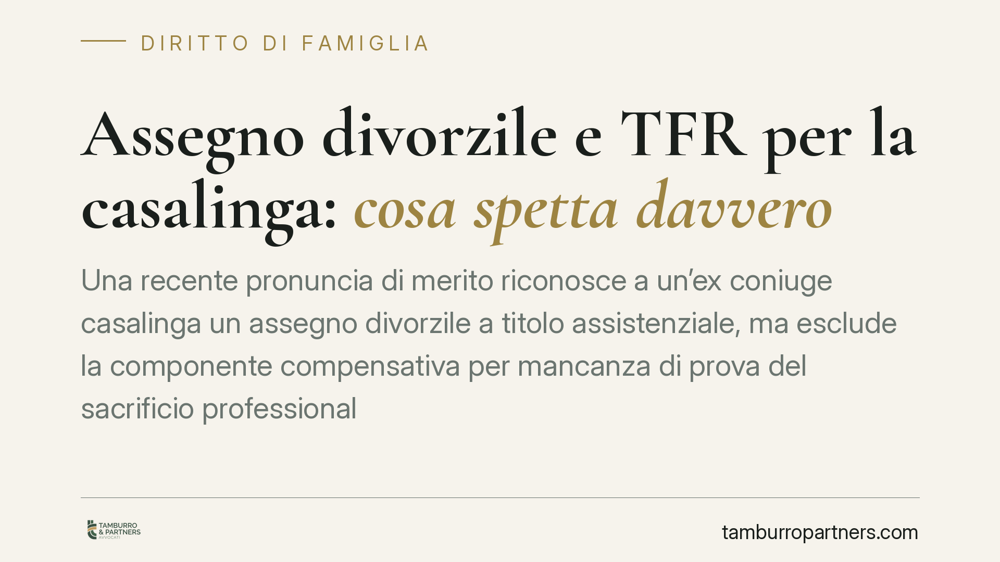
Assegno divorzile e TFR per la casalinga: cosa spetta davvero
Una recente pronuncia di merito riconosce a un'ex coniuge casalinga un assegno divorzile a titolo assistenziale, ma esclude la componente compensativa per mancanza di prova del sac…
Spese straordinarie per i figli e chat WhatsApp: il silenzio vale consenso?
Una recente pronuncia di merito è tornata sul tema delle spese straordinarie per i figli comunicate via messaggistica. Il punto: se un genitore riceve l'avviso di una spesa e non r…
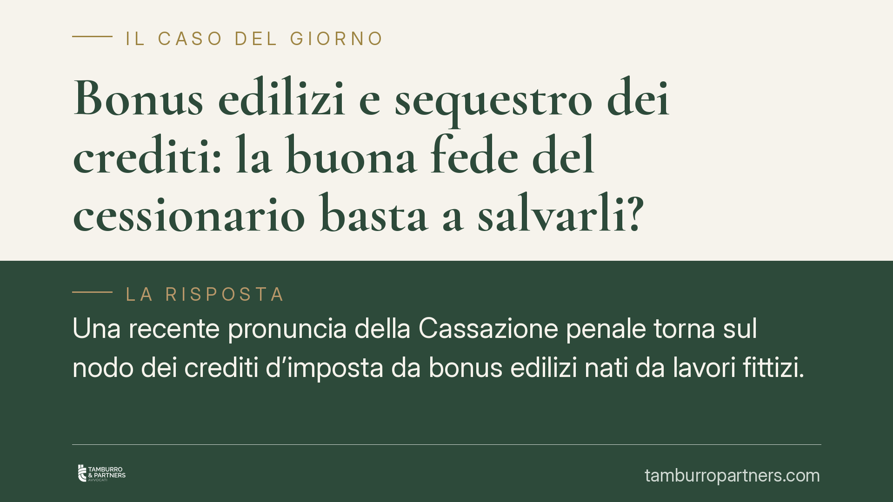
Bonus edilizi e sequestro dei crediti: la buona fede del cessionario basta a salvarli?
Una recente pronuncia della Cassazione penale torna sul nodo dei crediti d'imposta da bonus edilizi nati da lavori fittizi. La questione: quei crediti sono sequestrabili anche pres…
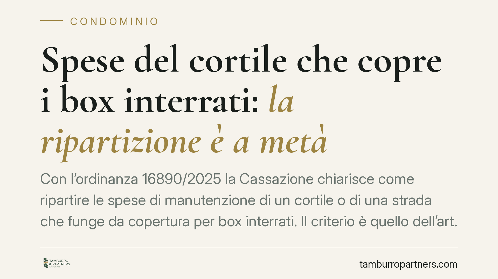
Spese del cortile che copre i box interrati: la ripartizione è a metà
Con l'ordinanza 16890/2025 la Cassazione chiarisce come ripartire le spese di manutenzione di un cortile o di una strada che funge da copertura per box interrati. Il criterio è que…
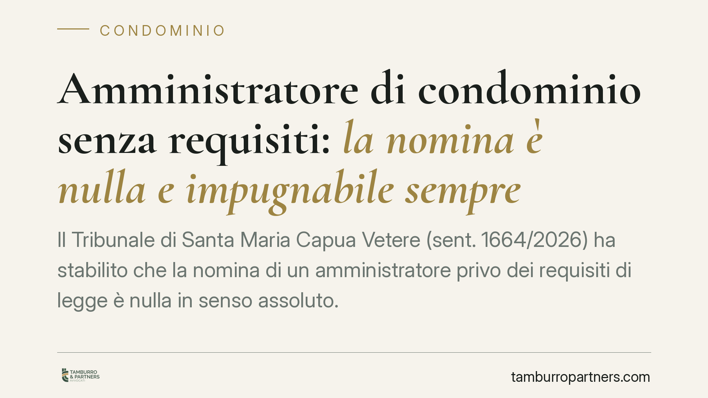
Amministratore di condominio senza requisiti: la nomina è nulla e impugnabile sempre
Il Tribunale di Santa Maria Capua Vetere (sent. 1664/2026) ha stabilito che la nomina di un amministratore privo dei requisiti di legge è nulla in senso assoluto. La conseguenza è …
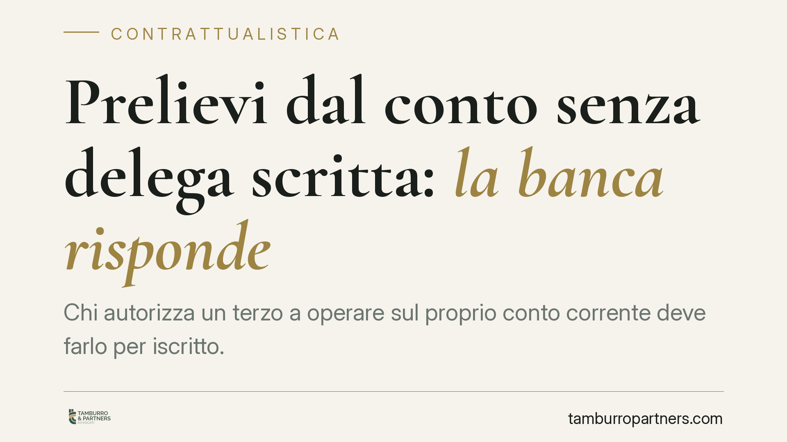
Prelievi dal conto senza delega scritta: la banca risponde
Chi autorizza un terzo a operare sul proprio conto corrente deve farlo per iscritto. Una recente pronuncia della Corte di Cassazione ribadisce che la delega non può essere provata …
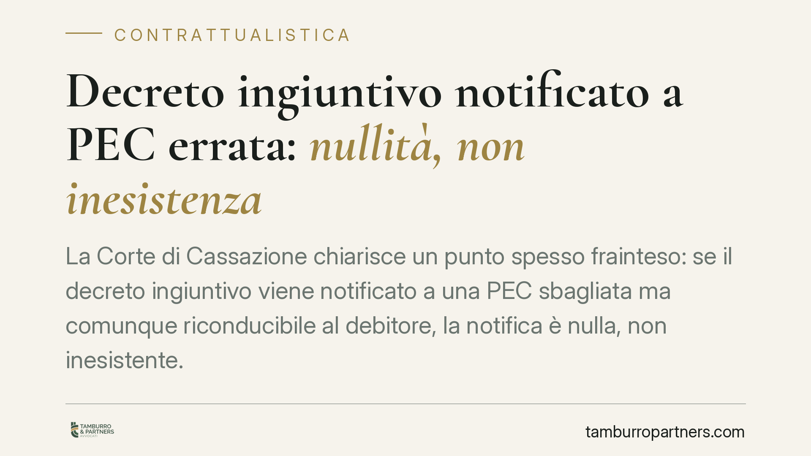
Decreto ingiuntivo notificato a PEC errata: nullità, non inesistenza
La Corte di Cassazione chiarisce un punto spesso frainteso: se il decreto ingiuntivo viene notificato a una PEC sbagliata ma comunque riconducibile al debitore, la notifica è nulla…
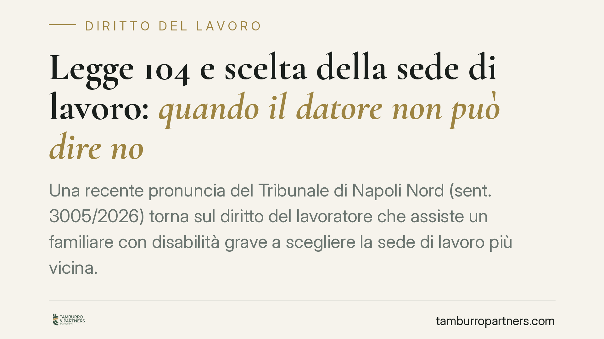
Legge 104 e scelta della sede di lavoro: quando il datore non può dire no
Una recente pronuncia del Tribunale di Napoli Nord (sent. 3005/2026) torna sul diritto del lavoratore che assiste un familiare con disabilità grave a scegliere la sede di lavoro pi…
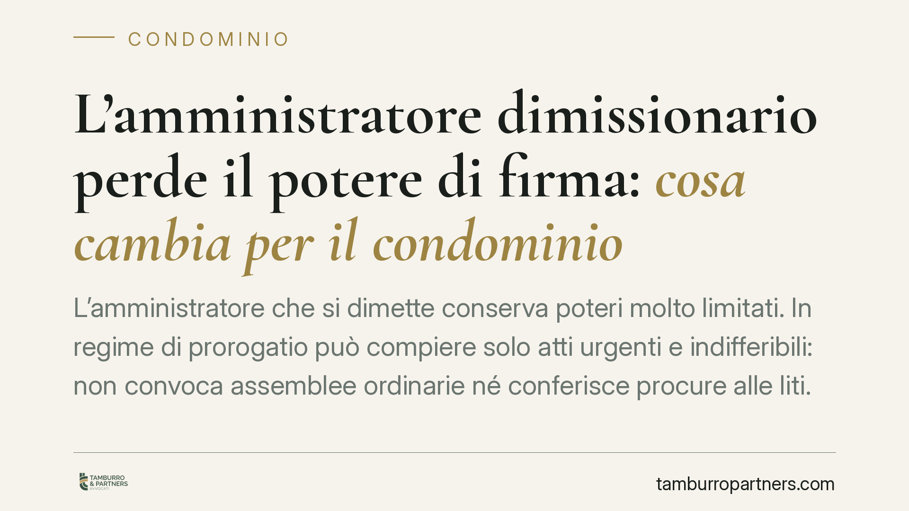
L'amministratore dimissionario perde il potere di firma: cosa cambia per il condominio
L'amministratore che si dimette conserva poteri molto limitati. In regime di prorogatio può compiere solo atti urgenti e indifferibili: non convoca assemblee ordinarie né conferisc…
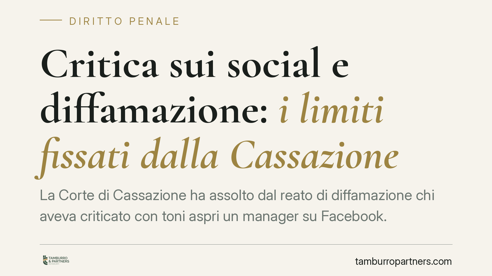
Critica sui social e diffamazione: i limiti fissati dalla Cassazione
La Corte di Cassazione ha assolto dal reato di diffamazione chi aveva criticato con toni aspri un manager su Facebook. Le espressioni, pur forti, erano agganciate a condotte reali …
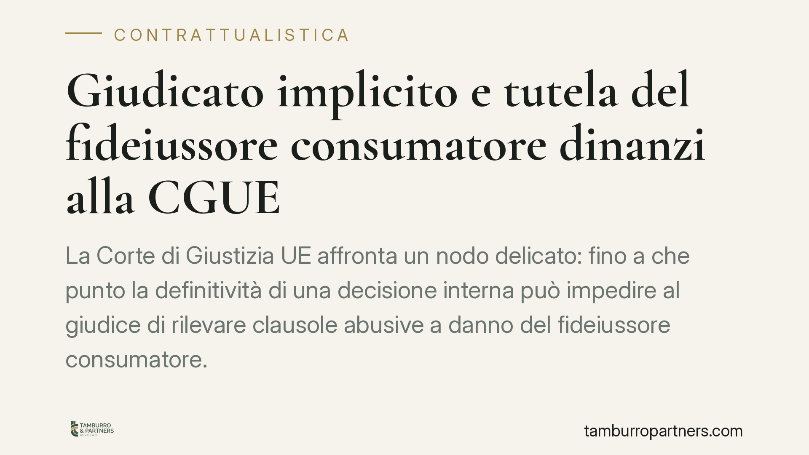
Giudicato implicito e tutela del fideiussore consumatore dinanzi alla CGUE
La Corte di Giustizia UE affronta un nodo delicato: fino a che punto la definitività di una decisione interna può impedire al giudice di rilevare clausole abusive a danno del fidei…
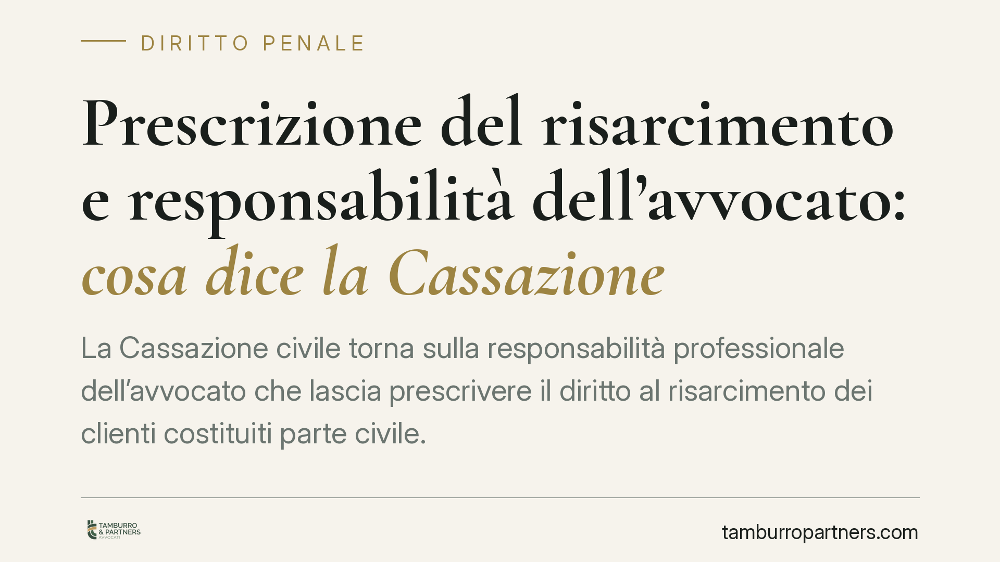
Prescrizione del risarcimento e responsabilità dell'avvocato: cosa dice la Cassazione
La Cassazione civile torna sulla responsabilità professionale dell'avvocato che lascia prescrivere il diritto al risarcimento dei clienti costituiti parte civile. La decisione chia…
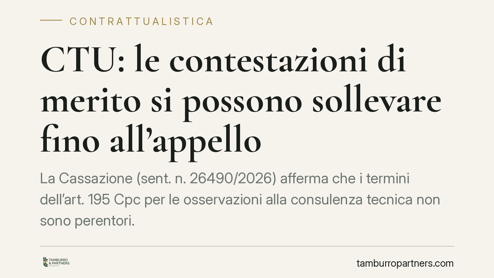
CTU: le contestazioni di merito si possono sollevare fino all'appello
La Cassazione (sent. n. 26490/2026) afferma che i termini dell'art. 195 Cpc per le osservazioni alla consulenza tecnica non sono perentori. Le contestazioni valutative di merito al…
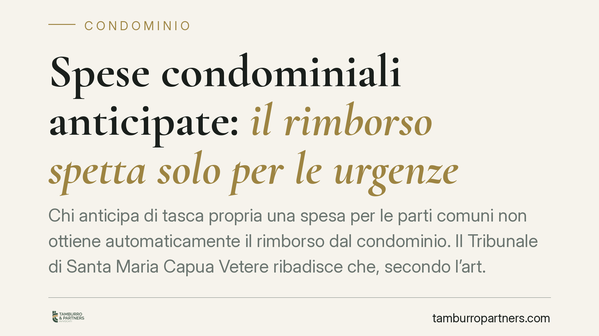
Spese condominiali anticipate: il rimborso spetta solo per le urgenze
Chi anticipa di tasca propria una spesa per le parti comuni non ottiene automaticamente il rimborso dal condominio. Il Tribunale di Santa Maria Capua Vetere ribadisce che, secondo …
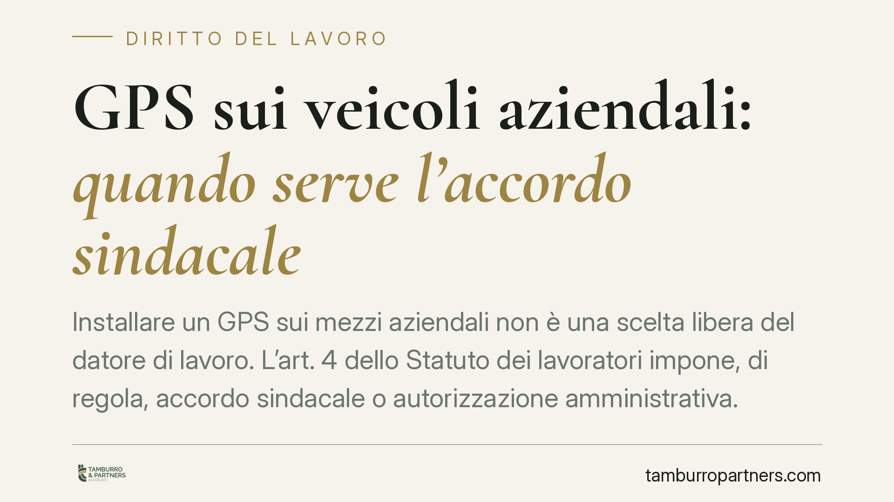
GPS sui veicoli aziendali: quando serve l'accordo sindacale
Installare un GPS sui mezzi aziendali non è una scelta libera del datore di lavoro. L'art. 4 dello Statuto dei lavoratori impone, di regola, accordo sindacale o autorizzazione ammi…
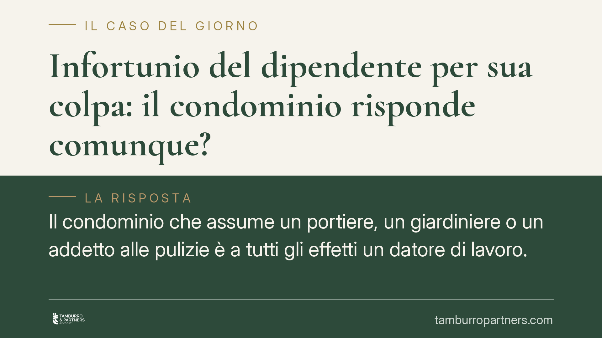
Infortunio del dipendente per sua colpa: il condominio risponde comunque?
Il condominio che assume un portiere, un giardiniere o un addetto alle pulizie è a tutti gli effetti un datore di lavoro. Per questo risponde degli infortuni dei propri dipendenti …
Vessazioni al coniuge dopo la separazione: maltrattamenti o stalking?
Le condotte vessatorie verso il coniuge non si fermano sempre con la separazione. La qualificazione penale cambia a seconda che residui o meno un legame affettivo e di convivenza. …
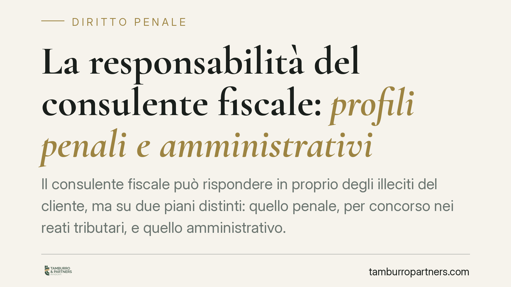
La responsabilità del consulente fiscale: profili penali e amministrativi
Il consulente fiscale può rispondere in proprio degli illeciti del cliente, ma su due piani distinti: quello penale, per concorso nei reati tributari, e quello amministrativo. Conf…
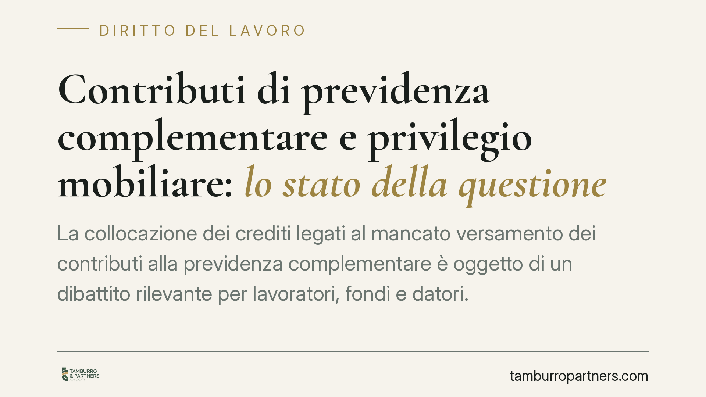
Contributi di previdenza complementare e privilegio mobiliare: lo stato della questione
La collocazione dei crediti legati al mancato versamento dei contributi alla previdenza complementare è oggetto di un dibattito rilevante per lavoratori, fondi e datori. In gioco è…
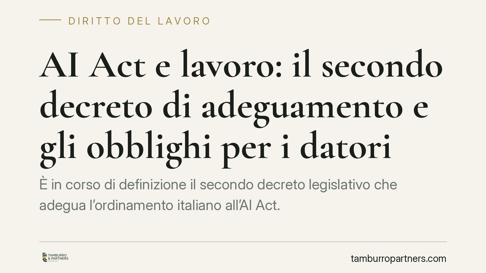
AI Act e lavoro: il secondo decreto di adeguamento e gli obblighi per i datori
È in corso di definizione il secondo decreto legislativo che adegua l'ordinamento italiano all'AI Act. Il provvedimento tocca anche l'uso dell'intelligenza artificiale in ambito la…
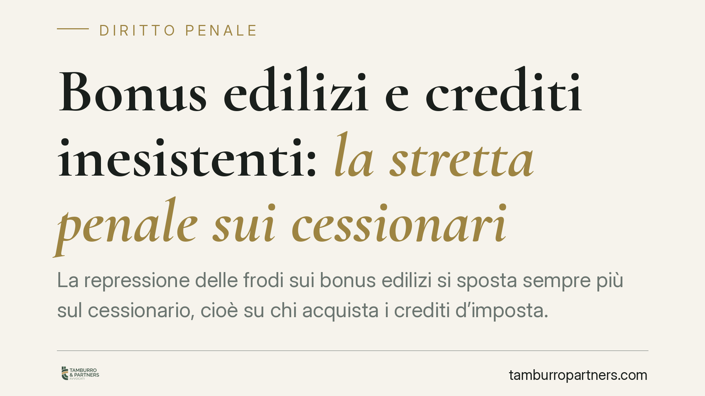
Bonus edilizi e crediti inesistenti: la stretta penale sui cessionari
La repressione delle frodi sui bonus edilizi si sposta sempre più sul cessionario, cioè su chi acquista i crediti d'imposta. L'orientamento della Cassazione tende a qualificare que…
Sequestro dello smartphone: la copia forense integrale è legittima?
Quando la polizia giudiziaria sequestra uno smartphone può davvero copiarne l'intero contenuto? L'orientamento della Cassazione è netto: il vincolo probatorio deve colpire solo i d…
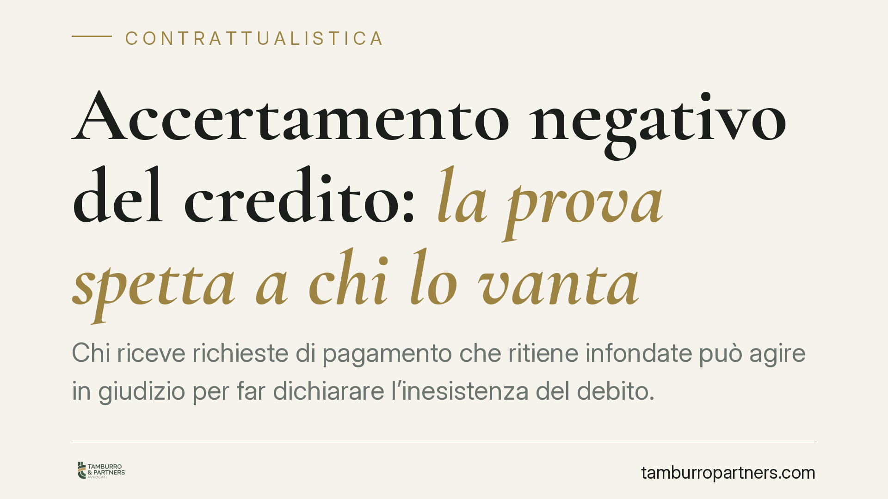
Accertamento negativo del credito: la prova spetta a chi lo vanta
Chi riceve richieste di pagamento che ritiene infondate può agire in giudizio per far dichiarare l'inesistenza del debito. Una recente sentenza di merito ribadisce un principio spe…
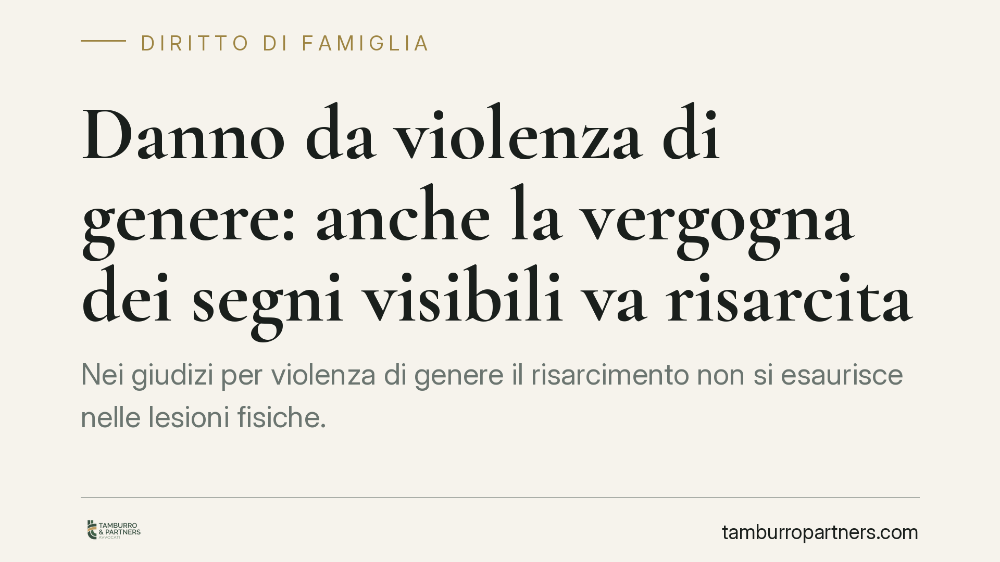
Danno da violenza di genere: anche la vergogna dei segni visibili va risarcita
Nei giudizi per violenza di genere il risarcimento non si esaurisce nelle lesioni fisiche. Oltre al danno biologico può rilevare anche la frustrazione e l'imbarazzo provati dalla v…
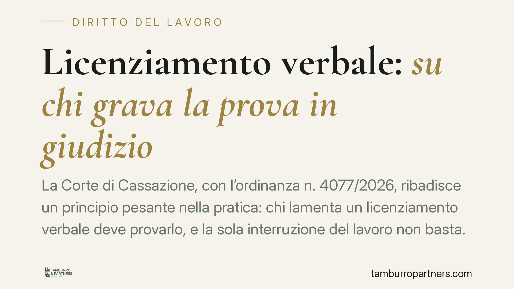
Licenziamento verbale: su chi grava la prova in giudizio
La Corte di Cassazione, con l'ordinanza n. 4077/2026, ribadisce un principio pesante nella pratica: chi lamenta un licenziamento verbale deve provarlo, e la sola interruzione del l…

Welfare aziendale e baby sitter: quando il rimborso è esentasse
Secondo un recente chiarimento del MEF, i rimborsi aziendali per servizi di baby sitting resterebbero esenti da Irpef anche al di fuori dell'ambito scolastico. L'indicazione riapre…

Durata eccessiva dei processi tributari e garanzie CEDU: cosa cambia per il contribuente
Le liti fiscali italiane continuano a durare troppo. Sul punto incidono due profili distinti: l'irragionevole durata del processo, tutelata dalla legge Pinto, e la qualificazione d…

Sanzioni fiscali più miti e violazioni passate: la questione della retroattività
Il D.Lgs. 87/2024 ha riformato le sanzioni tributarie rendendole, in molti casi, più lievi. Ma ne ha limitato l'applicazione alle violazioni commesse dopo l'entrata in vigore del n…

Assemblee online dopo l'emergenza: cosa cambia tra Spa, Srl ed ETS
Con la fine della disciplina emergenziale sulle assemblee a distanza, torna centrale lo statuto. Le regole cambiano in modo sensibile a seconda del soggetto: Spa, Srl ed Enti del T…

Violenza di genere e danno morale: la lesione visibile che pesa due volte
Secondo l'orientamento della Corte di Cassazione, la vittima di violenza di genere che riporta lesioni visibili può ottenere il risarcimento di un danno morale distinto da quello b…

Cadute su scale bagnate: il condominio paga anche se la pulizia è in appalto
Il condominio è custode delle parti comuni ex art. 2051 c.c.: appaltare le pulizie non sposta la responsabilità verso il danneggiato. Solo rivalsa sull'appaltatore.

RUNTS: chiarimenti Modello D 2024 per enti del terzo settore
Il Ministero del Lavoro chiarisce l'uso del Modello D semplificato per gli ETS con entrate inferiori a 220.000 euro.

Licenziamento disciplinare: contestazione specifica e tempestiva
La Cassazione ribadisce: contestazione non specifica = nullità del licenziamento. Implicazioni operative per HR.

Clausole vessatorie B2B: la nuova lettura del Tribunale di Milano
Anche tra imprese, una clausola di limitazione di responsabilità non specificamente approvata può essere abusiva.

Bonus condominiali: ripartizione spese e delibera assembleare
Con il restringimento delle agevolazioni, le assemblee tornano a deliberare nuovi criteri di ripartizione.

5x1000: nuove regole per le ricevute di rendicontazione
L'Agenzia delle Entrate aggiorna lo schema di rendicontazione. Cosa devono fare gli enti beneficiari entro l'anno.

Ispezione INL: come gestire la richiesta documentale
I tempi di risposta, i documenti obbligatori, i margini di interlocuzione. Checklist operativa per HR.